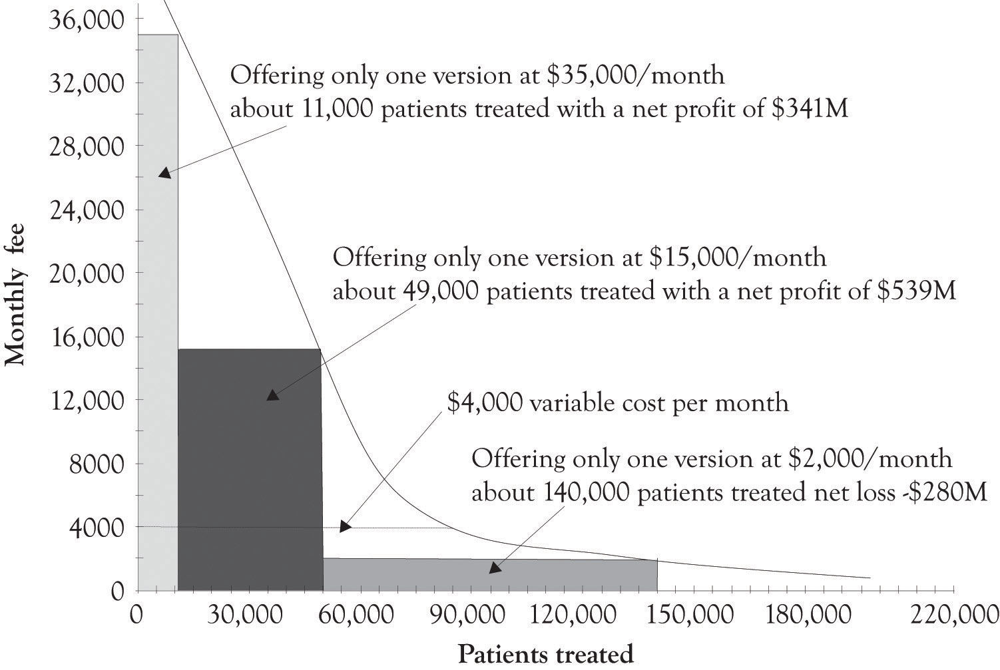
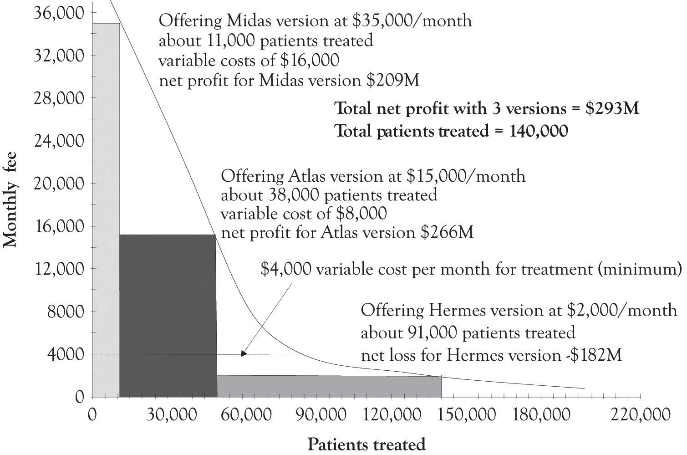

According to the American Cancer Society, the estimated number of new cancer cases in 2010 was over 1.5 million.American Cancer Society (2010). One of my classes recently analyzed a case involving NovaCure, a company that developed a promising approach for treating cancer.Sahlman and Flaherty (2010). NovaCure developed a technique to disrupt cancer cell division using electromagnetic waves, called Tumor Treating Fields. Early clinical trials suggest that when the Tumor Treating Fields are used in conjunction with chemotherapy, the survival time of glioblastoma patients improves significantly. NovaCure estimates that the therapy might be suitable for treating 200,000 different types of cancers including brain tumors, head and neck tumors, presurgical breast treatment, nonsmall-lung cancer, and pancreatic cancer. Since the NovaCure approach is not a drug, but a medical device, the approval process is abbreviated, but it is still extensive and expensive. The question raised during the case analyses was whether versioning could be applied to treating diseases?The students analyzed the case by first using the FAD (features, attributes, and design) template and the Ten–Ten planning templates. In general, the case analyses were superlative and several creative solutions for versioning were identified. The total expenditures for life sciences’ R&D in the USA in 2010 were over $59 billion and over $133 billion globally.Grueber and Studt (2011). Life sciences include pharmaceuticals, medical devices and equipment, and biotechnology. The approval of pharmaceuticals and medical treatments and the accompanying R&D can exceed hundreds of millions of dollars. Versioning can even help solve the difficult problem of covering costs of developing expensive treatments for diseases and treating a substantial number of patients.
Figure 5.14 "Net Profits When Only One Version of the Treatment Is Offered" illustrates a hypothetical demand curve for a hypothetical treatment for a hypothetical cancer that affects 200,000 individuals a year. The made-up variable costs for treating the cancer were set at $4,000. This is the base or minimum variable cost. As illustrated in Figure 5.14 "Net Profits When Only One Version of the Treatment Is Offered", if the company only sold one version at $35,000 per month, they would net $341 million per month. If they sell only the Atlas version at $15,000 per month, they would net $539 million per month. If they sell the Hermes version at $2,000 per month, they would lose $280 million per month.
Figure 5.14 Net Profits When Only One Version of the Treatment Is Offered
The first thing that has to be dealt with is that there are two conflicting goals. The drug and medical devices community want to cover the cost of development and eventually makes a profit. The goal of patients, doctors and some policy makers is to cure as many people as possible. This situation also illustrates that there is a difference in the willingness-to-pay and the ability-to-pay. In most situations, consumers are engaged in a never-ending calculus involving how much money they have to spend and how they want to allocate their money. These calculations are hidden, yet ongoing, and always involve trade-offs related to wants and desires and the consumers’ willingness-to-pay for a product or service. When there are decisions related to sustaining life, the life-sustaining trade-off dominates. There is a mismatch between the willingness-to-pay and the ability-to-pay. Versioning can help.
Figure 5.15 "Net Profit When Three Treatment Versions Are Offered" illustrates how a hypothetical drug or medical device company could make a nice profit by versioning the cancer treatment and also treat 70% of the patients having the disease. The company could just offer one version of the product and net $539 million and treat 49,000 patients, or offer three versions and net $239 million and treat 140,000 patients. This should cover the fixed costs of product development. The actual implementation of versioning would of course be subject to a variety of inputs and serious dialog involving the public, the drug and medical device companies, insurance companies, the health care community, economists, policy makers, and politicians. And of course arbitrage would have to be dealt with. Some sort of mechanism would have to be in place to prevent the purchase of a Hermes treatment and selling it in the Midas market. As we have demonstrated throughout this book, versioning is a keystone foundation of the current competitive marketplace. Versioning has the potential to bring beneficial medical products and services to a broader base of individuals suffering from serious diseases. It will just take a concerted effort on the part of the various constituencies to develop a versioning solution.
Figure 5.15 Net Profit When Three Treatment Versions Are Offered
